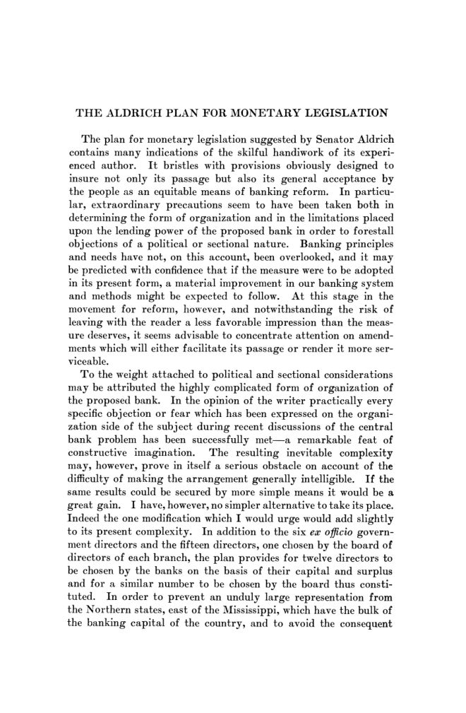

Sprague, 1911: o plano Aldrich e o risco do crédito fácil
Leitura: 8 min
Sprague apoia o plano Aldrich, mas pede limites ao redesconto de papel longo, alerta para o efeito multiplicador dos empréstimos da Reserve Association e estima um balanço inicial com reserva de 50%.


O. M. W. Sprague, de Harvard, abre com um elogio e uma advertência. O plano de legislação monetária do senador Aldrich traz muitas marcas da mão experiente do autor e está cheio de dispositivos desenhados para garantir sua aprovação e sua aceitação como reforma equitativa. Se adotado como estava, prevê Sprague, melhoraria materialmente o sistema bancário. Ainda assim, ele escolhe concentrar-se nas emendas que facilitariam a aprovação ou tornariam a instituição mais útil, correndo o risco de deixar uma impressão menos favorável do que o projeto merece.
A primeira observação é sobre a organização. O plano criava uma Reserve Association, com sede e quinze filiais, governada por um conselho de composição complexa. Para Sprague, praticamente todo receio expresso no debate sobre um banco central fora respondido, o que ele chama de proeza; a complexidade resultante, porém, dificultaria explicar o arranjo ao público.
A resposta a cada objeção de organização foi “uma notável proeza de imaginação construtiva”. (“a remarkable feat of constructive imagination”)
Sprague considera, contudo, que se dava importância excessiva à organização. Limitado quase só a adiantamentos sobre papel comercial e sempre sob os olhos do público, o banco dificilmente seria usado para fins egoístas, individuais ou regionais. O que de fato importava era o uso prudente dos recursos em tempos normais e a guarda de uma parte deles para emergências, e isso não se garante só com regras de organização.
Por que a taxa uniforme preocupava Sprague?
O projeto obrigava o banco a emprestar à mesma taxa em todo o país. Sprague reconhece que, sem essa regra, o plano teria pouca chance de passar, mas aponta o custo. Mesmo com controle majoritário do Leste, o grosso dos empréstimos iria para o Oeste e o Sul, onde as taxas eram mais altas. Sem poder subir a taxa numa região, o banco não teria como conter a demanda excessiva dali sem tornar inútil o redesconto para as demais. Em outros países, observa, as filiais dos bancos comerciais equalizavam as taxas; nos Estados Unidos, essa tarefa recairia quase toda sobre o banco central.
Retirada a defesa pelo preço, seria preciso proteger a administração dos tomadores por outros meios, menos para evitar erros do que para poupar o banco da desconfiança que surgiria se recusasse muitos pedidos de uma região e atendesse todos os de outra.
Que limites ele propõe?
O redesconto direto seria restrito a papel comercial com vencimento em até 28 dias e emitido pelo menos 30 dias antes, até o valor do capital do banco solicitante; para esse tipo de operação, Sprague acha as restrições adequadas. O problema estava no papel mais longo. Bancos agrupados em associações locais poderiam garantir papel de até quatro meses, que a Reserve Association redescontaria, e o limite das garantias era o capital mais as reservas de todos os membros. Onde o capital era escasso, como em Oklahoma, com juros normais de 8% ou mais, quase todos os bancos usariam o mecanismo.
A proposta é limitar as garantias da associação local à metade do capital, ou à metade do capital e das reservas, de cada banco. Para as emergências, o próprio plano já previa uma válvula: por voto especial da comissão executiva e com aprovação do secretário do Tesouro, a Reserve Association poderia descontar notas de bancos garantidas pela associação local e lastreadas em títulos aceitos a dois terços do valor de mercado, seguindo precedentes dos bancos centrais europeus e das câmaras de compensação americanas.
Quanto crédito um banco central cria?
O argumento central do artigo é sobre expansão. A subscrição do capital tiraria pouco das reservas dos bancos, e os depósitos que formariam os recursos do banco viriam da transferência de reservas já existentes. Logo, quase todo empréstimo da Reserve Association seria acréscimo líquido à oferta de crédito. E mais: os depósitos dos bancos na Reserve Association se tornariam suas reservas. Como os bancos mantinham reservas de cerca de um quinto dos depósitos, cada dólar emprestado regularmente pelo banco central poderia sustentar empréstimos de cerca de cinco vezes esse valor.
Um grande volume permanente de empréstimos exporia o país a “perigo muito grave de expansão excessiva do crédito”. (“very grave danger of excessive credit expansion”)
Daí a regra que Sprague extrai: os recursos do banco deveriam servir para necessidades temporárias, sazonais ou de crise, e não para dar aos bancos uma dose constante de crédito. O volume de crédito bancário no país, acrescenta, já era grande o bastante em relação ao capital das empresas. O desejável era tornar o papel comercial o ativo mais líquido e atraente dos bancos, invertendo sua posição em relação ao empréstimo caucionado.
O banco teria recursos suficientes?
Sprague então inverte a pergunta: talvez os recursos fossem tão escassos que quase tudo teria de ficar em reserva. Ele estima um capital integralizado de no máximo US$ 125 milhões, cerca de US$ 100 milhões de depósitos do governo e uns US$ 400 milhões de depósitos dos bancos, supondo que transferissem todo o encaixe acima de 5% dos depósitos. Somando a substituição das notas dos bancos nacionais, monta um balanço inicial.
Para Sprague, 50% é o mínimo para um banco com tamanhas responsabilidades. Havia, porém, uma fonte adicional: cerca de US$ 900 milhões em certificados de ouro circulavam, lastreados em ouro do Tesouro. Se o banco retivesse os que recebesse e pagasse com notas próprias, sua reserva cresceria. O obstáculo era o imposto progressivo, de até 6%, sobre notas emitidas além da circulação existente dos bancos nacionais, que não distinguia a nota que substitui ouro da que aumenta a moeda. Ele propõe tributar as notas conforme caísse a razão de reservas.
E os bancos estaduais?
O obstáculo político mais difícil seria a oposição dos bancos estaduais e das trust companies. O plano oferecia atrativos para que entrassem no sistema nacional: operações fiduciárias, departamentos de poupança com aplicação em hipotecas e aceite de papel comercial. Restavam as exigências de reserva da lei nacional, mais pesadas. Sprague propõe que elas dependam da natureza do negócio, e não da cidade: qualquer banco poderia ser agente de reserva, em qualquer lugar, se mantivesse 25% de reserva em caixa ou na Reserve Association; bancos de negócio local teriam a exigência dos bancos do interior.
Na minha leitura
Na minha leitura, o artigo é uma aula sobre o balanço de um banco central. Sprague não discute se o país deve ter um, mas o que acontece quando ele empresta: cada adiantamento vira reserva dos bancos e se multiplica. A distinção entre liquidez temporária, para a safra ou o pânico, e crédito permanente é o coração do texto, e explica por que ele quer limites quantitativos onde o projeto deixava tudo à discrição dos administradores.
Também é notável a análise da taxa uniforme. Ao proibir que o preço do redesconto variasse entre regiões, o projeto tirava do banco seu principal instrumento de racionamento e o obrigava a recusar pedidos caso a caso, o que é pior economicamente e mais perigoso politicamente. É um exemplo claro de como uma concessão feita para aprovar uma lei pode transferir o conflito para a operação diária da instituição.
Glossário
- Plano Aldrich
- projeto de reforma monetária apresentado pelo senador Nelson Aldrich à National Monetary Commission, que criava a Reserve Association of America.
- Redesconto
- operação em que o banco central compra de um banco títulos que este já descontou, dando-lhe liquidez.
- Papel comercial
- títulos de curto prazo originados em operações de comércio e produção.
- Associação local
- grupo de bancos que, no plano Aldrich, garantia coletivamente o papel de seus membros perante a Reserve Association.
- Razão de reservas
- proporção entre o encaixe em metal e notas de curso legal e os passivos exigíveis à vista.
- Certificados de ouro
- papéis do Tesouro americano lastreados integralmente em ouro depositado, que circulavam como moeda.
- Trust companies
- instituições de direito estadual que combinavam serviços fiduciários com operações bancárias.
Fontes
- The Aldrich Plan for Monetary Legislation — O. M. W. Sprague (Harvard University) (pp. 262–271). JSTOR · Internet Archive (PDF)
- Edição completa, com os demais artigos: Nº 114 do Arquivo.
Documento em domínio público (EUA, publicado antes de 1931), via JSTOR Early Journal Content e Internet Archive. Resumo e comentário do autor deste site, sem afiliação com a American Economic Association. Encontrou um erro? Escreva: a correção é publicada no próprio texto, com data.
← Fisher, 1911: a equação de trocas posta na balança ↑ Nº 114 · Junho de 1911: o plano Aldrich, o Canadá e a equação de trocas